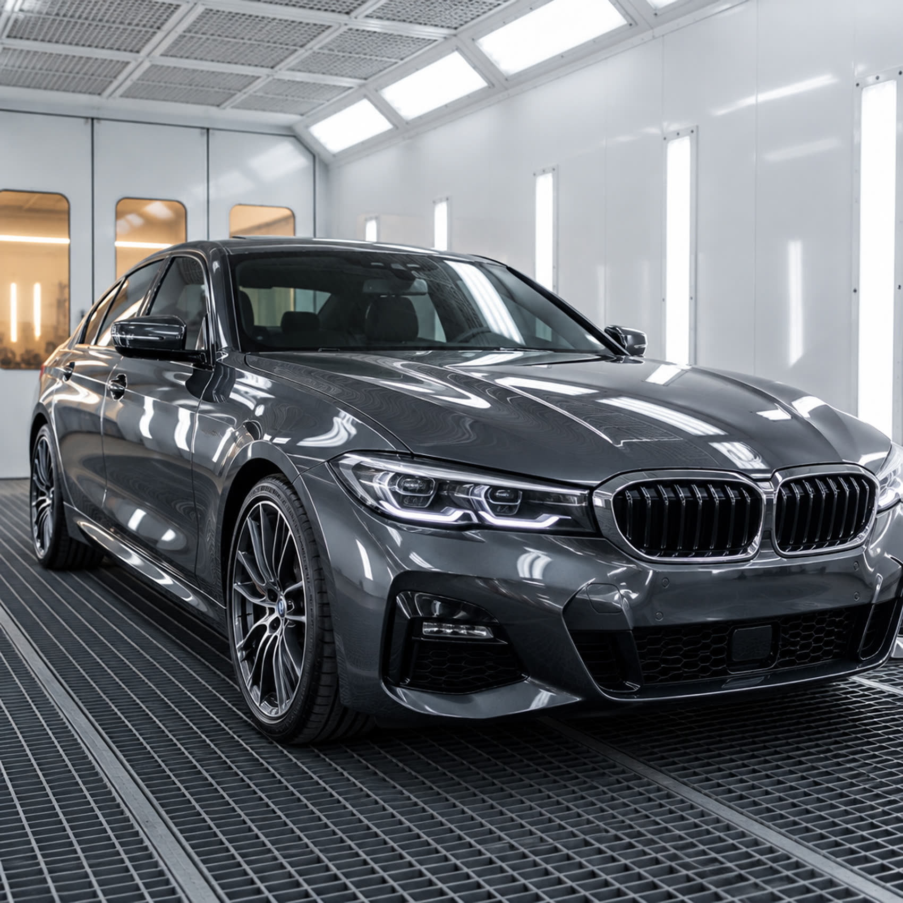

Царапина на двери —
не повод красить всю машину
Красим и ремонтируем снятые элементы: дверь, капот, крыло, бампер, крышку багажника. Цвет подбираем по коду краски и проверяем выкраской, а не «на глаз» по фотографии.
Примерить оттенок и финиш
Это не «конфигуратор цвета». Это способ показать, почему покраска по фотографии не работает: оттенок зависит от света, угла и типа пигмента.
Что красим и что с этим делаем
Пять позиций, которые приходят чаще всего. Если деталь не в списке — всё равно спросите: красим кузовные элементы и пластик.
Пять этапов от детали до сборки
Каждый этап виден и объясним: если деталь была битая, вы увидите, где шпатлёвка, а где металл.
Коротко о главном
Если чего-то нет в списке — позвоните, ответим без «приезжайте, посмотрим».
Можно ли покрасить только один элемент?
Да, это основной формат работы: привозите снятый бампер, крыло или дверь. При частичной покраске на автомобиле показываем, как будет выглядеть переход.
Попадёте ли в цвет?
Подбираем по коду краски и проверяем выкраской под лампой. На металлике и перламутре всегда есть допуск: даже заводские детали из разных партий отличаются.
Сколько сохнет?
Зависит от лака и температуры в камере. Точный срок называем после осмотра детали, потому что он зависит от объёма ремонта.
Красите пластик и неоригинальные детали?
Да, с правильным грунтом по пластику. Неоригинальные детали часто требуют больше подготовки — об этом скажем заранее.
Работаете с юрлицами?
Да, ООО работает по договору. Условия и закрывающие документы обсуждаем при заказе.
Пришлите фото детали — назовём вилку
По фото видно характер повреждения: трещина, скол, вмятина или просто выгоревший лак. Этого достаточно, чтобы назвать порядок цены.